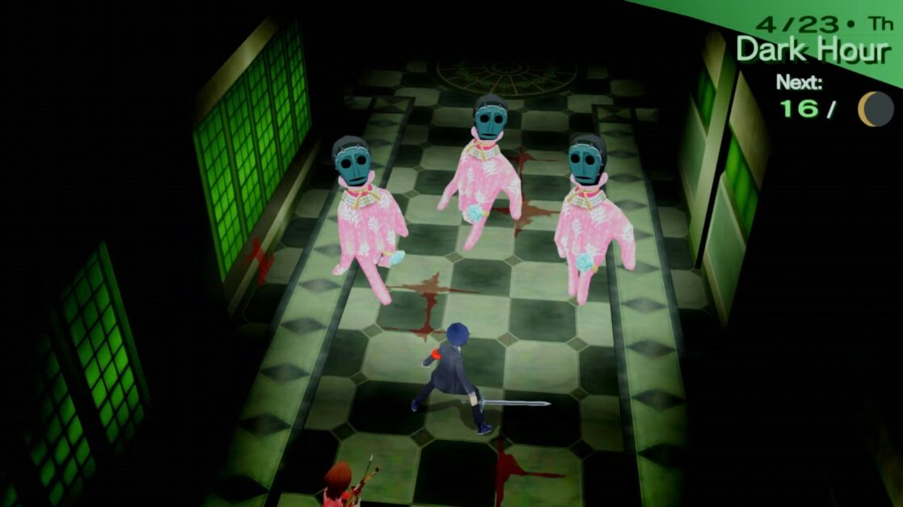
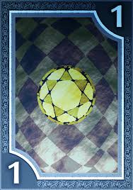
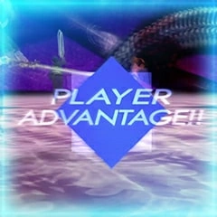
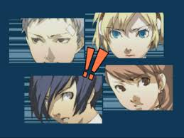
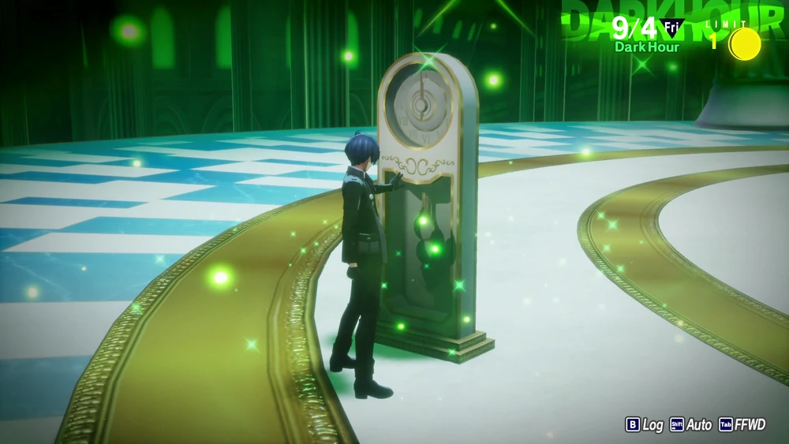

Persona 3 Tartarus tippek
Dátum: 2026.04.25. - Szerző: Sallai Máté
A Persona 3 minden idők egyik legismertebb JRPG játékok közé tartozik, amely mindenkinek ajánlott, hogy próbálja ki. Ugyan amennyire közkedvelt, nem könnyű megszokni a harcokhoz megfelelő gondolatmeneteket, mint például én a játékban töltött 15 óra után derítettem ki. Akik nem ismerik a Persona 3-t, a Tartarus egy olyan helyszín, amely általában megkérhetsz egy személyt a kollégiumodban, hogy mennyetek arra, a Tartarus-nál tudsz shadow-kal (ellenségekkel) harcolni, és ezáltal tudod fejleszteni játszható karaktereidet. Ebben a cikkben megismerhetsz 5 tippeket a Tartarus kapcsán, amely segíthetnek neked a játékod során. Fontos megjegyeznem hogy ezt a Persona 3 FES változat játékosainak szánom, mert lehet hogy a Persona 3 Portable vagy Persona 3 Reloaded játékosainak más stratégia szükséges.
5. Törekedj felfelé
A Tartarus szintekből (floor-okból) épül, amely egy lépcső segítségével tudsz egy szintet lépni, ugyan figyelmeztetve leszel, hogy a bizonyos szinteket nehéz ellenségek őrzik, amelyeket le kell győznöd, hogy tovább juthass. Érdemes először eléri azokat a szinteket, mert lesz hozzáférésed a szint terminal-jához, amely a bizonyos szintek váltakozására szolgál. Feltételezve, ha aktiváltad és utána lementetted a játékodat az első szinten, végtelen esélyed van szembeszállni az őrködő ellenséggel, és ha sikerül legyőznöd, akkor a további szinteken erősebb ellenségeket és jobb kincseket találhatsz, amely jobban fejleszti a party-dat, mint az alábbi szintek, de ha esetleg nem sikerül legyőzni az ellenséged, akkor ne ess kétségbe, mert az őrzött szint alul található ellenségek elég lesznek neked, és hátha a játékban másnapra sikerül legyőzni.

4. Pénz esetén látogass korábbi block-okat
A Tartarus nemcsak szintekből áll, hanem block-okra oszlik, ha esetleg szükséged van pénzre és az 1. block felett vagy, akkor meglátogathatod a korábbi block-okat, ahol tudsz találni pénz a kincseken vagy olyan fegyvereket, amiket eladhatsz. Nem kell aggódnod az ellenségektől hiszen ha elég erős vagy, akkor menekülnek előled.

3. Mindig hátul támadj!
Ha az ellenségeket úgy támadod meg, ha hátul találod őket, vagy legalábbis ha nem vesznek észre téged, akkor player advantage-ben lesz részed, azaz az első körben csak a party fog cselekedni, ami nagyon fontos mert a harcok kulcsa az ellenség gyengeségeinek a kihasználása, mert majdnem minden shadow-nak van gyengesége, amely egy persona megfelelő varázslata segítségével nagyot sebezhetsz. De vigyázz, az ellenség is hátba támadhat téged vagy tud szerezni enemy advantage-t, azaz első körben csak az ellenség fog cselekedni, ami nem jó hír, és rossz helyzetbe sodorhatja a party-dat, ezért érdemes inkább megvárni az alkalmat, hogy sújtsál az ellenségre, minthogy egymással szembe rohanjatok.

2. Gondold át az all-out attack-et
Ha az összes ellenség down állapotban van mert kihasználtad gyengeségeid vagy kritikus találatokat kaptak, akkor lesz esélyed egy all-out attack-re, azaz minden ellenséget megsebezhetsz. Ez jónak tűnik, ugyan ha ez megtörténik, akkor az összes ellenségnek eltűnik a down állapot és cselekedhetnek egy körben, ami nem jó ha erős ellenségekről lenne szó. All-out attack-et csakis akkor fogadj el, ha csak egy ellenség van, vagy biztos vagy abban, hogy az all-out attack az összes ellenséged legyőzi, máskülönben utasítsd el, mert esetleg a csapattársaid csak egy ellenségre céloznak és a többi ellenség nem tud cselekedni a körben mert először a down állapotuk tűnik el.

1. Mentsél!
Fontos betartanod, amint találsz egy hasznos tárgyat, befogadtál egy új persona-t vagy sok exp-t szereztél a meneted során, AZONNAL keressél egy teleport-ot, ami az első szinthez visz és mentsed le a fájlodat. Persze ha ezt megcsinálod, akkor újra előbukannak a shadow-k a korábban kiürített szinteken, de inkább ezt válasszad, minthogy emeljed a tétedet, és véletlenül az ellenség túl erőset üssön a főkarakteredhez, ami a halálához vezessen és game over történjen, így az egész eredményed odavesszen

Forrás
Saját tapasztalat